🎯 Цели занятия
- Узнать, из каких частей состоит компьютер и для чего они нужны
- Освоить основные приёмы работы с мышью и клавиатурой
- Понять, что такое файл, папка и программа
- Узнать, что такое алгоритм — первый шаг к программированию
| Этап занятия | Время | Что делаем |
|---|---|---|
| Знакомство, орг. момент | 10 мин | Знакомимся, рассказываем про курс РОБОВИТА |
| Части компьютера | 15 мин | Монитор, системный блок, мышь, клавиатура |
| Тренируемся: мышь и клавиатура | 25 мин | Клики, перетаскивание, набор текста |
| Файлы, папки и первый алгоритм | 20 мин | Разбираем понятие алгоритма на примере |
| Практика за компьютером | 15 мин | Самостоятельные упражнения |
| Опрос и итоги | 5 мин | Проверяем себя |
| Итого | 90 мин | — |
1 Из чего состоит компьютер?
Привет! Меня зовут Бит, я робот-помощник школы РОБОВИТА, и я проведу тебя через первое занятие. Компьютер — это как робот: у него тоже есть «тело» из разных важных частей.
| Часть | Для чего нужна | Аналогия |
|---|---|---|
| Монитор | Показывает изображение, окна программ | Глаза компьютера |
| Системный блок | «Мозг» — здесь все вычисления | Мозг робота |
| Клавиатура | Ввод текста и команд | Руки, которые печатают |
| Мышь | Управление курсором на экране | Указательный палец |
| Колонки / наушники | Звук игр и видео | Уши компьютера |
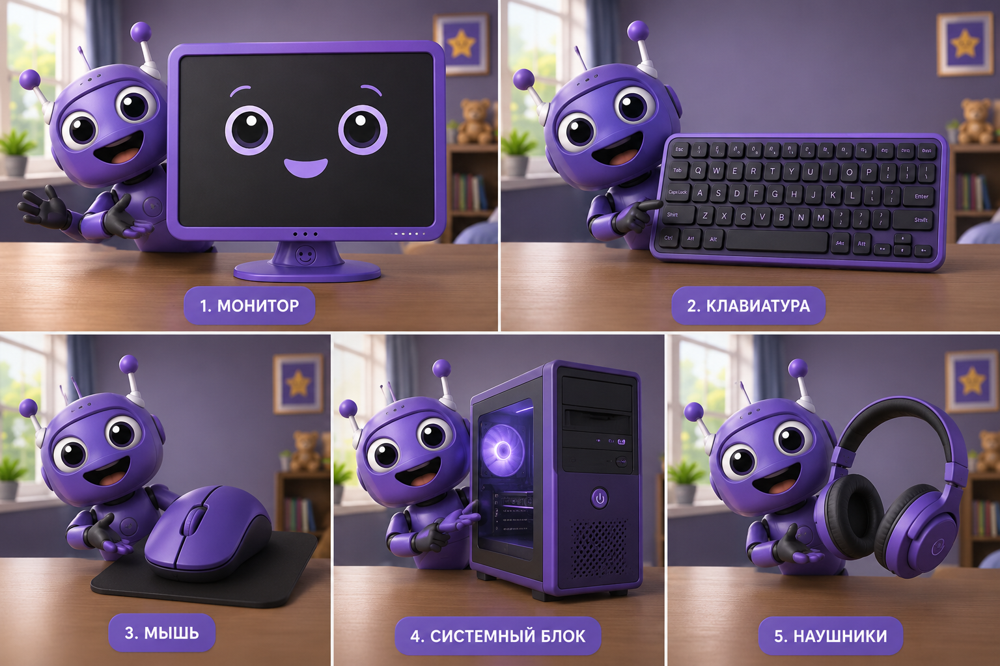
Учимся управлять мышью
| Действие | Как сделать | Когда используется |
|---|---|---|
| Одиночный клик (ЛКМ) | Один раз нажать левую кнопку | Выбрать объект, кнопку |
| Двойной клик | Два быстрых нажатия левой кнопки | Открыть программу или файл |
| Правый клик (ПКМ) | Нажать правую кнопку | Открыть меню действий |
| Перетаскивание (Drag&Drop) | Зажать ЛКМ и вести мышь | Переместить объект |
| Колёсико | Крутить колёсико мыши | Прокрутка страницы, зум |
Клавиатура: главные клавиши
На клавиатуре, кроме букв и цифр, есть особые клавиши-помощники:
⌨️ Найди и проверь главные клавиши
Найди каждую клавишу на своей клавиатуре, попробуй её действие и отметь галочкой.
-
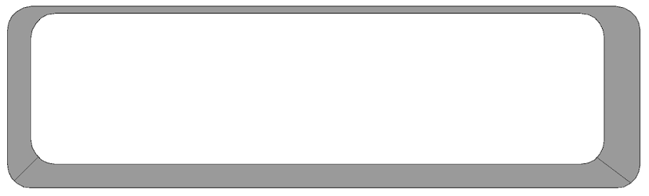
-
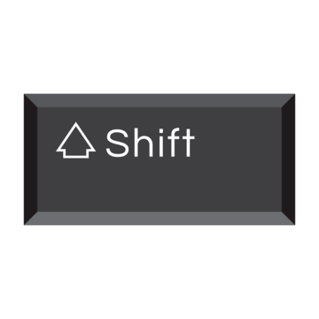
-
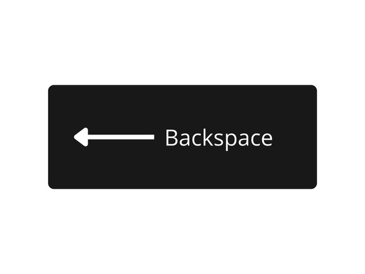
-
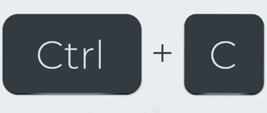
-
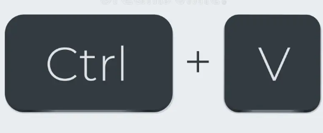
-
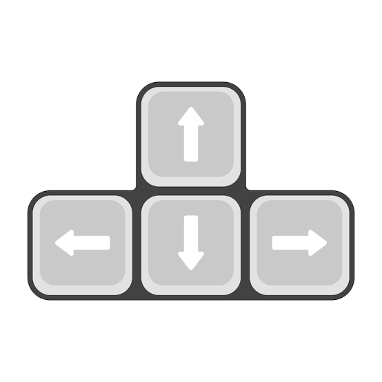
2 Файлы, папки и твой первый алгоритм
Все программы и картинки на компьютере хранятся в виде файлов. А папка — это как коробка, в которой лежат файлы, чтобы не было беспорядка на столе.
Теперь — самое интересное. Программа — это когда компьютеру дают чёткий список команд по порядку. Такой список называется алгоритм. Ты пользуешься алгоритмами каждый день, даже не подозревая об этом!
Пример: алгоритм заваривания чая
Вот так может выглядеть алгоритм в виде пронумерованных шагов — почти как настоящий код программиста:
-- Алгоритм: как заварить чай
1. Налить воду в чайник
2. Включить чайник и подождать закипания
3. Положить пакетик чая в чашку
4. Залить чашку кипятком
5. Подождать 3 минуты
6. Вынуть пакетик — чай готов!Если переставить шаги местами (например, вынуть пакетик ДО того, как залили воду) — алгоритм сломается! Порядок команд очень важен, и в программировании это правило работает точно так же.
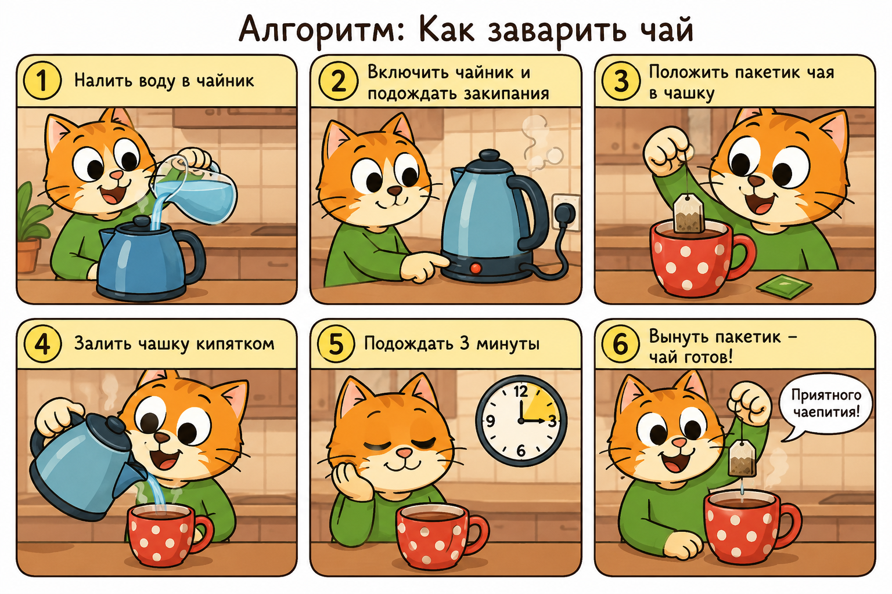
🔑 Установи соответствие
Выбери для каждой клавиши правильное действие:
🧩 Угадай часть компьютера
Нажми на карточку с правильным ответом:
🔀 Собери алгоритм по порядку
Перетащи шаги мышкой, чтобы они шли в правильной последовательности (сверху вниз):
🕵️ Найди ошибку в алгоритме
Какой шаг нарушает правильный порядок?
💭 Рефлексия
Закончи фразы:
Нажми на вопрос — Алиса ответит тебе прямо сейчас!
Просто скажи: «Алиса, объясни, что такое алгоритм простыми словами»
🛠️ Практическое задание: Тренировка мышки и клавиатуры
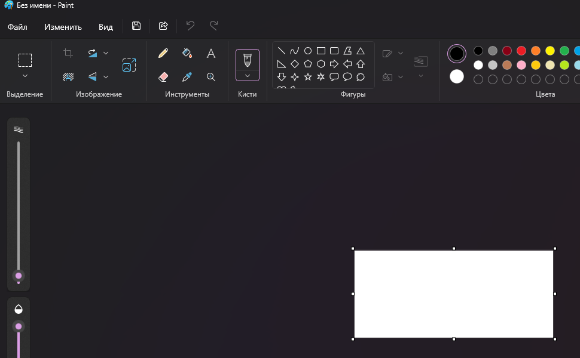
-
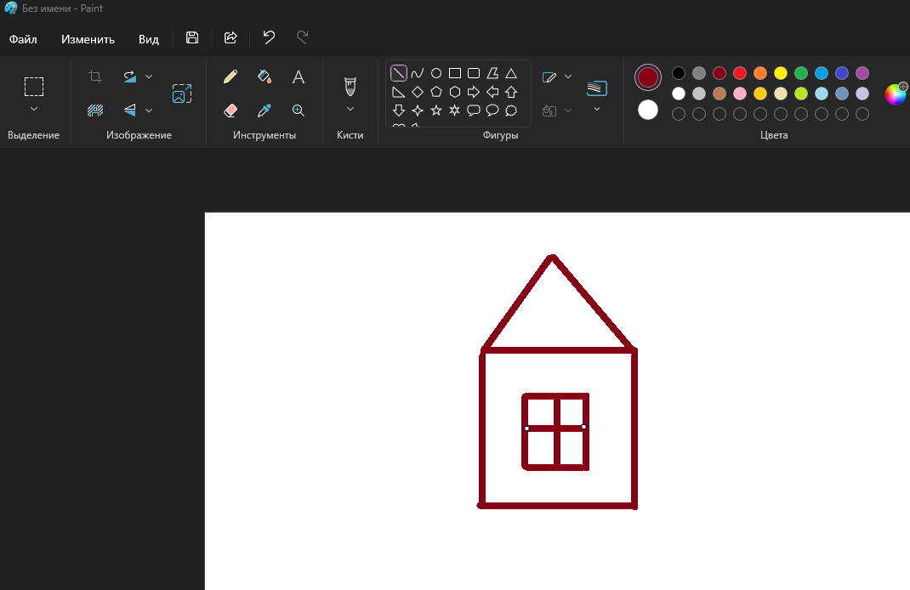
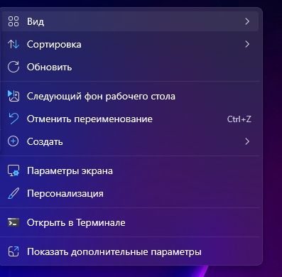
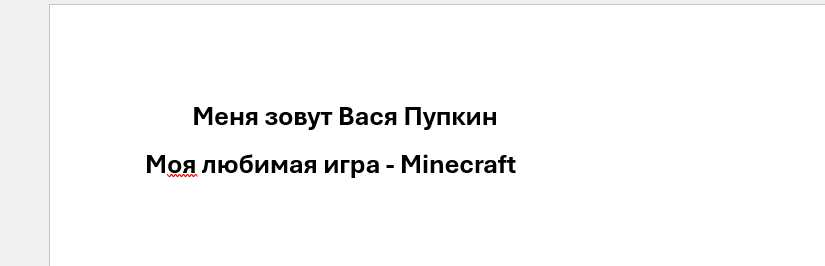
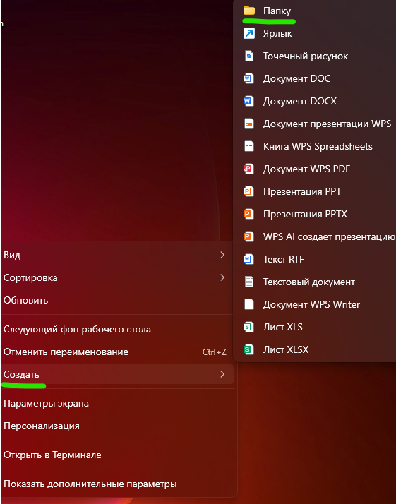
📝 Проверь себя
1. Как называется список команд по порядку?
2. Что нужно сделать, чтобы открыть программу с рабочего стола?
3. Где хранятся файлы, чтобы не было «беспорядка на столе»?
4. Какое сочетание клавиш вставляет скопированный текст?
5. Что произойдёт, если перепутать порядок шагов алгоритма?
6. Что такое файл?
7. Какая часть компьютера отвечает за все вычисления?
8. Какое действие мыши используется для перетаскивания объектов?
9. Клавиша Space (пробел) в играх часто используется для...
10. Для чего нужна клавиша Shift?